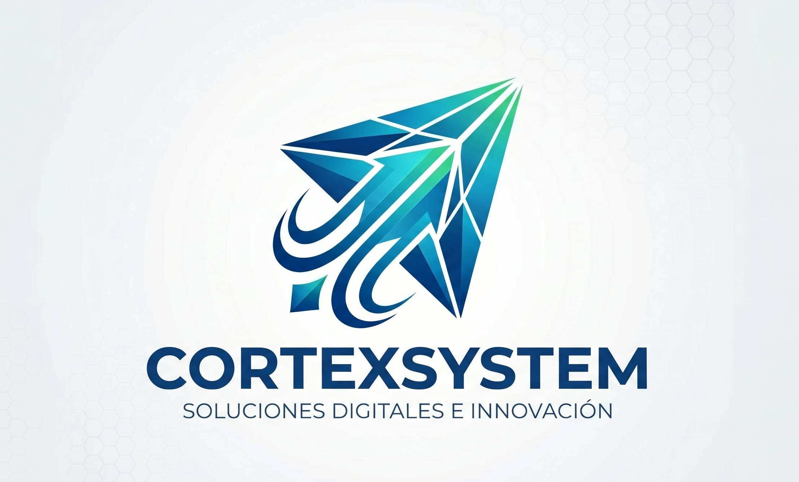

Nuestra Misión: Empoderar tu Creatividad
En Cortex Systems, no solo vendemos piezas de silicio; entregamos las herramientas que definen el futuro de los profesionales y gamers en México.

Nuestra Historia
Todo comenzó con una frustración común: la dificultad de encontrar componentes de alto rendimiento con asesoría técnica real y especializada en Monterrey. Cortex Systems nació para llenar ese vacío en el mercado.
No somos solo una tienda de hardware. Somos el aliado estratégico de creadores de contenido, ingenieros, desarrolladores y gamers entusiastas que buscan llevar su setup al siguiente nivel sin comprometer la calidad ni la estabilidad de sus sistemas.
Cada pieza que recomendamos está pensada en el flujo de trabajo específico de nuestros clientes, garantizando una inversión inteligente a largo plazo.
¿Quiénes somos?
Un equipo de ingenieros y entusiastas de la tecnología que entendemos que un componente es una inversión en tu productividad. Eliminamos la fricción entre el usuario y el hardware complejo.
Nuestro Compromiso
Formalidad en la garantía y total transparencia técnica. Si un componente no es el adecuado para tu trabajo, te lo diremos. Tu rendimiento final es la única métrica de nuestro éxito.
Nuestra Visión
Convertirnos en el principal proveedor y consultor tecnológico del norte del país, estandarizando ensambles de nivel empresarial y construyendo una comunidad que entienda el verdadero valor del hardware.